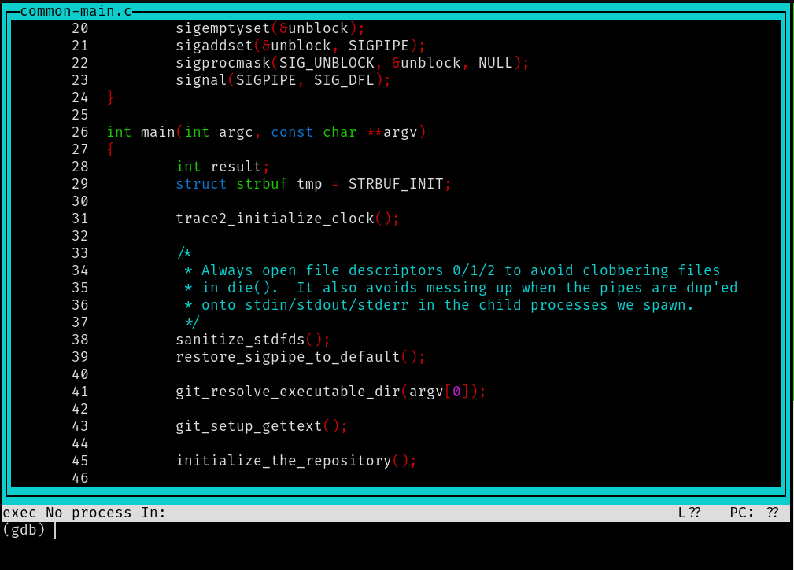

All hail GDB

This week started off with a bug.
git branch was not working with the verbose flag. It was causing
a realloc error. For around 10 minutes, I tried to read some code
in cmd_branch, try to figure out where the verbose option leads to,
until I gave up, totally finding myself in the middle of a codemaze.
This is where GDB comes to the rescue. I knew using basic GDB but never used
it on a big enough codebase like Git so I was reluctant to use it in the beginning.
Here is a good tutorial
by Christian on how to debug using GDB.
The tutorial should be helpful enough but still, I would like to document how I debugged the problem.
After any failed test, you cd into t/trash\ directory.{test_name}.
Generally will be couple of files there but the ones we will be interested in are
actual : The output given by git
expect : The output expected
err : Log errors if there were any
Tests fail when either of two happens:
- actual and expect are not identical
- err occurs
In my case, I got the following error:
fatal: out of memory, realloc failed
Not much information, but atleast we know what part of code might have caused it.
Lets begin begin debugging then,
gdb ./gitshould debug your compiled git(in root directory of the project)lay nextwill open up a section with the assembly instructions in it. Hitentera couple of times till you see the C code like in the image:

- Set up a break point in the desired line or function.
break cmd_branch - Next, run the Git command that is causing the error.
run branch -v - It will stop the execution exactly at the breakpoint.
- To execute the next line, enter
nornext. To step inside a function, entersorstepTo print a variable, enterp <variable name>.
After doing these steps a couple of times, I reached the section in ref-filter.c:
static void indent_copy_msg(const char **msg, int msglen,
struct strbuf *sb, int indent)
...
strbuf_grow(sb, linelen + indent + 20);
add_indentation(line, linelen, sb, indent);
strbuf_addch(sb, '\n');
...
./git crashed after this strbuf_grow line. indent was an exceptionally large
integer. It turned out to be a garbage value. The function which calls indent_copy_msg:
static void grab_sub_body_contents(struct atom_value *val, int deref, struct expand_data *data)
...
if (atom->u.contents.option == C_SUB) {
if (used_atom->indent_val) {
struct strbuf sb = STRBUF_INIT;
indent_copy_msg(&subpos, sublen, &sb, used_atom->indent_val);
v->s = strbuf_detach(&sb, NULL);
} else
v->s = copy_subject(subpos, sublen);
passed an uninitialized value of used_atom->indent_val.
That was the bug! After initializing the indent_val, it was fixed.